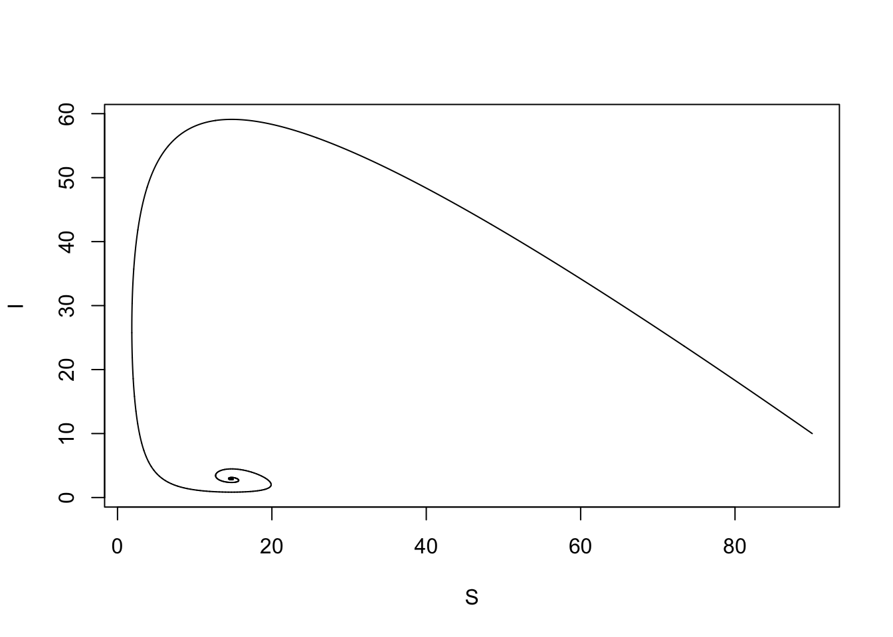
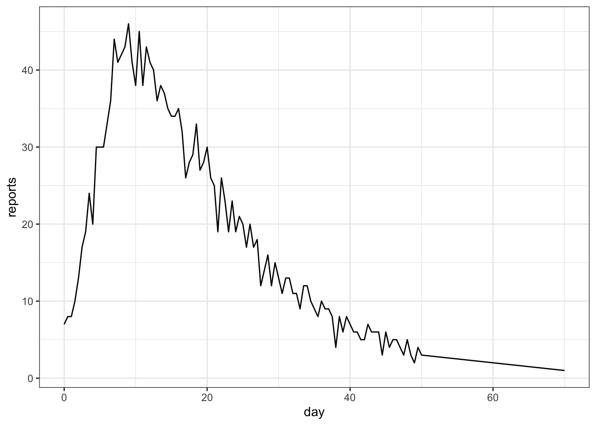
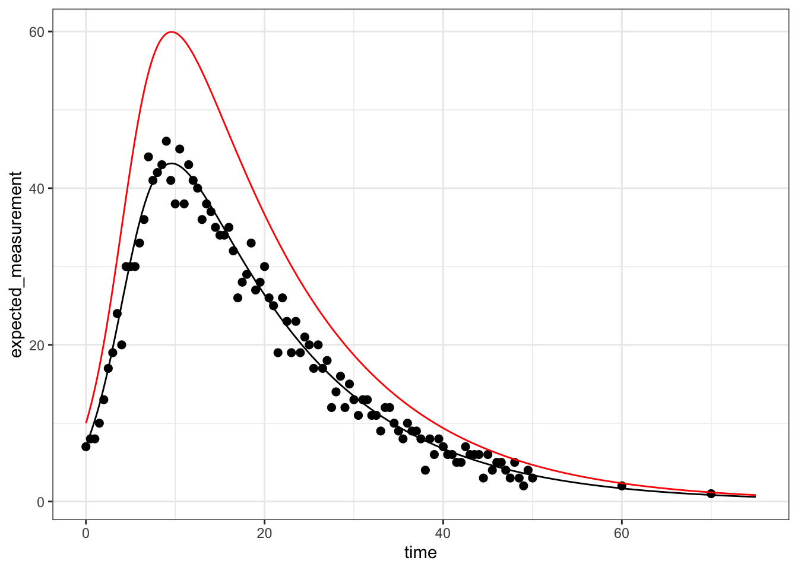
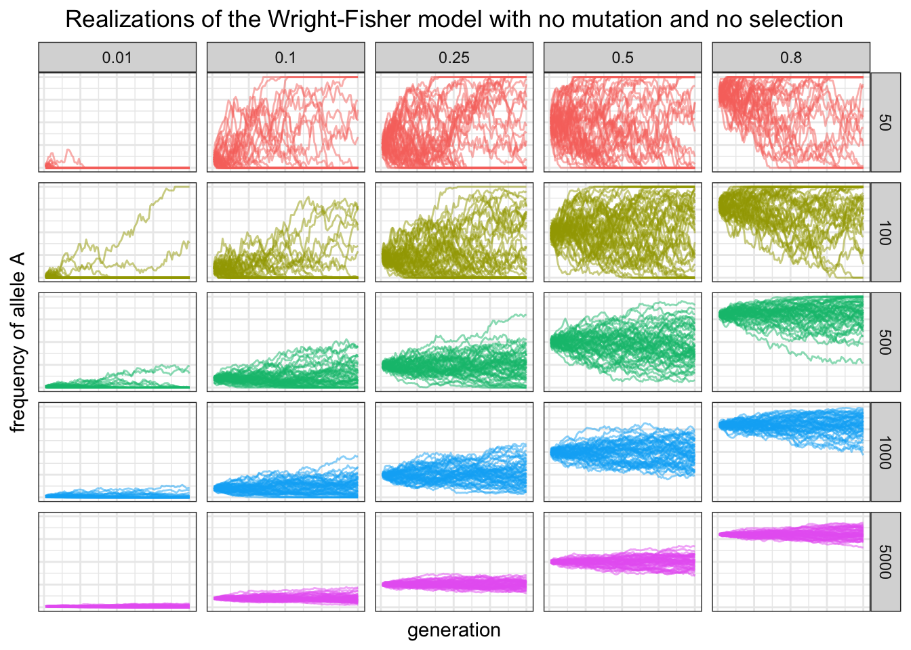
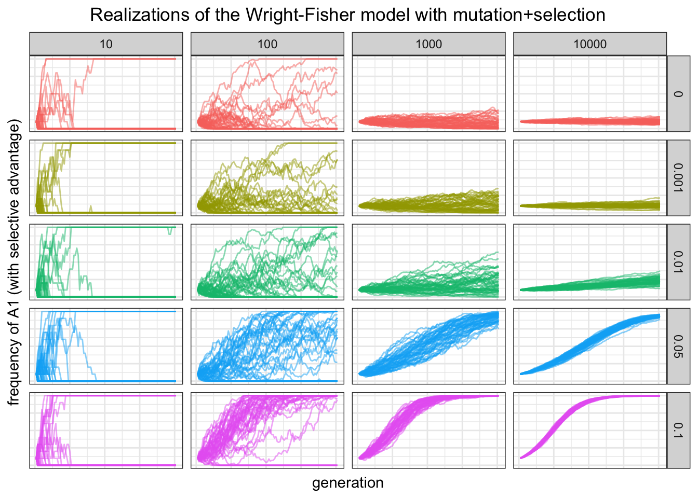

require(tidyverse)
require(pbmcapply)
require(deSolve)
theme_set(theme_bw())16 Mathematical modeling II
16.1 Lesson preamble
16.1.1 Lesson objectives
- Develop familiarity with important mathematical models in EEB
- Develop familiarity with how to fit mathematical models to data
- Understand how to numerically solve systems of differential equations in R
- Understand how to simulate simple stochastic models in R
- Practice solving systems of ODEs and stochastic simulation
16.1.2 Lesson outline
- Using deSolve to solve systems of differential equations
- Fitting models to data: a case study in the SIR model
- Simulation of the Wright-Fisher model
16.2 Using deSolve to solve systems of differential equations
Last class we discussed how to formulate and analyze (by finding equilibria and determining their stability properties) systems of differential equations of the form
\[\frac{d x_i}{dt} = f_i(x_1,\dots,x_n|\theta),\]
where \(x_1,\dots,x_n\) are variables of interest (e.g., the number of susceptible and infected individuals in a population) and \(\theta\) is the set of all parameters (e.g., the transmission and recovery rates) which shape the dynamics and long-run behavior of the system (e.g., if the disease successfully spreads in the population).
In this class we will discuss how to numerically solve systems differential equations using the package deSolve. Numerical analysis of differential equations is a big, active area of research in mathematics but we will not concern ourselves with the details of how these methods ensure convergence to the true solution to a given system of differential equations. (It is enough to recognize that approximating each derivative with a difference quotient will provide a means to iteratively update variables through time.)
To illustrate how to solve differential equations using deSolve, we will consider the following system, which describes how a pathogen spreads in a population of hosts that are born and die at per-capita rate \(\mu\); this ensures that the population size is constant. We assume that all individuals are born susceptible to the disease, and that immunity is life-long. Transmission occurs at rate \(\beta\) and recovery at rate \(\gamma\). Finally, we include a term to capture disease-induced mortality (i.e., virulence).
The model is as follows:
\[\frac{dS}{dt} = \mu N - \beta S I - \mu S\] \[\frac{dI}{dt} = \beta S I - (\mu+\gamma+v) I\] \[\frac{dR}{dt} = \gamma I - \mu R\]
Since \(dN/dt = 0\), the population size is constant and we can (as we did last class) ignore the \(R\) equation (since \(R = N - S - I\)). Setting the previous equations to zero and solving, one has that there are two equilibria: the disease-free equilibrium \((S^*, I^*) = (N,0)\), and the endemic equilibrium
\[(S^*,I^*) = (\frac{\mu+\gamma+v}{\beta}, \frac{\mu N}{\mu+\gamma + v}-\frac{\mu}{\beta}).\]
The endemic equilibrium is stable (and the disease-free equilibrium is unstable) whenever the basic reproductive number of the disease agent
\[R_0 = \frac{\beta N}{\mu+\gamma+v}\]
is \(>1\), i.e., in an otherwise susceptible population a single infectious individual infects more than one individual on average. Notice how demography, recovery, and virulence all reduce the reproductive value of the pathogen; intuitively, this is because an infected individual can die or recover before transmitting.
Below we solve the system and plot the dynamics for a specific set of parameter values.
N <- 100 # population size
# define parameters
gamma <- 1/14 # mean infectious period = 14 days
v <- 1/14 # mean time before individual dies to due disease = 14 days
beta <- 0.01 # transmission rate
mu <- 1/200 # average life time of individual = 200 days
R0 <- beta*N/(mu+gamma+v); R0[1] 6.763285# put parameter values into vector params
params <- c(mu = mu, gamma = gamma, beta = beta, v = v)
initialI <- 10
state <- c(S=N-initialI, I=initialI) # define initial conditions
# define times to save
times <- seq(0, 500, 0.01)
# define the model!
sir <- function(time, state, params){
with(as.list(c(state,params)),{
dS <- mu*N - beta*S*I - mu*S
dI <- beta*S*I - gamma*I - v*I - mu*I
return(list(c(dS, dI)))
})
}
# numerically integrate equations!
out <- as.data.frame(ode(state, times, sir, params))
out %>% pivot_longer(! time) %>%
ggplot(aes(x = time, y = value, color = name)) +
geom_line()
16.2.1 Challenge
Determine at what time does the number of infected individuals peaks.
out[which.max(out$I),] time S I
482 4.81 14.74886 59.10662A common way to visualize the behavior of a mathematical model is to plot the variables (in the previous case, \(S\) and \(I\)) against each other in phase space. Doing this, one can determine how the variables jointly influence each other through time, and if/how they enter an equilibrium or limit cycle.
## plot phase plane
plot(I~S, out, type="l")
Based on the phase portrait of the system, the number of susceptible and infected individuals spiral into the endemic equilibrium.
16.3 Fitting the SIR model to data
We will now try to fit the above SIR model to (crudely) simulated case count data. We will assume \(\mu = v = 0\), i.e., no births or deaths occur over the sampling period.
read_csv("meas.csv") -> measRows: 103 Columns: 2
── Column specification ────────────────────────────────────────────────────────
Delimiter: ","
dbl (2): time, reports
ℹ Use `spec()` to retrieve the full column specification for this data.
ℹ Specify the column types or set `show_col_types = FALSE` to quiet this message.ggplot(meas, aes(x = time, y = reports)) + geom_line() + xlab("day")
To fit the model to the data using ML, we will follow the steps outlined in the previous lecture.
16.3.1 Step 1: determine the distribution of the data
We will assume the case count data are an imperfect and random sample of the true incidence. There are a couple ways to do this, but we will suppose the cases have a binomial distribution: \(\text{reports}_i \sim \text{Binomial}(\kappa I(t_i),p)\). In other words, a fraction \(\kappa\) of infected individuals at an observation time are tested and the test comes up positive with probability \(p\). (Keep in mind there are other ways to specify the distribution of the data around the solution of the model!)
16.3.2 Step 2: maximize the likelihood function
We will now write a function to solve the differential equation above for a fixed set of parameter values and evaluate the likelihood of the case count data for a set of parameters. Finally, looping over combinations of parameters we will determine where the likelihood assumes a maximum (i.e., the MLE).
initialI <- 10
state <- c(S=N-initialI, I=initialI) # define initial conditions
times <- seq(0, 75, 0.1)
params <- expand.grid(mu = 0,
gamma = seq(0.06,0.08,0.005),
beta = seq(0.003,0.006,0.001),
v = 0,
p = seq(0.5,0.9,0.1),
kappa = seq(0.4,1,0.1)
)
# many parameters fixed for convenience, but in general could / often should be fitted!
return_LL_at_specific_combo_params <- function(params_to_use){
reporting_times <- meas$time
out <-
as.data.frame(ode(state, times, sir, params_to_use)) %>%
subset(time %in% reporting_times)
# solve model for particular set of parameters
# keep variables only at observation times
LL <- c()
for (i in 1:length(reporting_times)){
LL[i] <- dbinom(meas$reports[i], size = round(params_to_use$kappa*out$I[i]),
prob = params_to_use$p)
}
# calculate likelihood of data at observation times
# based on assumption data are Normal around the solution at a given time
LogLik <- sum(log(LL))
# calculate log-likelihood of parameters given ALL data
return(data.frame(params_to_use, LogLik = LogLik))
}
LogLikihoods <- NULL
outALL <- NULL
for (i in 1:nrow(params)){
LogLikihoods <- rbind(LogLikihoods,
return_LL_at_specific_combo_params(params[i,])
)
outALL[[i]] <- data.frame(ode(state, times, sir, params[i,1:4]), index = i)
}
MLE <- LogLikihoods %>% subset(is.finite(LogLik)) %>%
subset(LogLik == max(LogLik)); MLE mu gamma beta v p kappa LogLik
573 0 0.07 0.005 0 0.8 0.9 -199.63outALL <- do.call(rbind, outALL)
# what does the solution at the MLE look like compared to the data?
best_solution <- outALL %>%
subset(index == which(LogLikihoods$LogLik == max(LogLikihoods$LogLik))) %>%
group_by(time) %>%
mutate(expected_measurement = MLE$kappa*MLE$p*I)
best_solution %>% ggplot() +
geom_line(aes(x = time, y = expected_measurement), color = "black") +
geom_point(data = meas, aes(x = time, y = reports), size = 2) +
geom_line(aes(x = time, y = I), color = "red")
That’s a pretty great match to the data. It is rare to see fits this good or have sampling as frequent in this example, but the underlying methodology is still quite powerful!
16.4 Simulation of the Wright-Fisher model
Recall that the Wright-Fisher model describes how a the frequency of an allele at a single, non-recombining locus changes due to genetic drift. To simulate realizations from the neutral WF model, we need to specify 1) the population size, 2) the initial frequency of the \(A_1\) allele, 3) the number of generations over which evolution will unfold, and 4) the number of replicate simulations. The below chunk does this using the fact \(X_{n+1}|X_n \sim \text{Binomial}(N,X_n/N)\), i.e., the number of \(A_1\) individuals in a given generation is a draw of a Binomial random variable with \(N\) trials and success probability \(X_n/N\). The function rbinom() is used in the simulation to randomly sample alleles.
# data.frame to be filled
wf_df <- data.frame()
sizes <- c(50, 100, 500, 1000, 5000) # effective population sizes
starting_p <- c(.01, .1, .25, .5, .8) # starting allele frequencies
n_gen <- 100 # number of generations
n_reps <- 50 # number of replicate simulations
for(N in sizes){
for(p in starting_p){
p0 <- p
for(j in 1:n_gen){
X <- rbinom(n_reps, N, p)
p <- X/N
rows <- data.frame(replicate = 1:n_reps, N = rep(N, n_reps),
gen = rep(j, n_reps), p0 = rep(p0, n_reps), p = p)
wf_df <- bind_rows(wf_df, rows)
}
}
}
head(wf_df) replicate N gen p0 p
1 1 50 1 0.01 0.04
2 2 50 1 0.01 0.02
3 3 50 1 0.01 0.00
4 4 50 1 0.01 0.00
5 5 50 1 0.01 0.04
6 6 50 1 0.01 0.00# plot!
ggplot(wf_df, aes(x = gen, y = p, group = replicate, color = as.factor(N))) +
geom_path(alpha = .5) + facet_grid(N ~ p0) +
theme(legend.position = "none") +
labs(x = "generation", y = "frequency of allele A",
title = "Realizations of the Wright-Fisher model with no mutation and no selection") +
theme(plot.title = element_text(hjust = 0.5),
axis.ticks.x = element_blank(), axis.text.x = element_blank(),
axis.ticks.y = element_blank(), axis.text.y = element_blank())
16.5 Adding mutation and selection to the Wright-Fisher model
In the model above, there is no mutation or selection. To add those forces into our model of evolution at a single locus, it is not too difficult. As before, we will assume population size is constant and \(=N\), and denote by \(X_n\) the number of \(A_1\) individuals in generation \(n\).
Suppose during reproduction \(A_1\) individuals produce \(A_2\) children with probability \(u_{12}\) and \(A_2\) individuals to \(A_1\) children with probability \(u_{21}\). In this case, the probability that an individual in a given generation has an \(A_1\) parent (i.e., that that child “chooses” an \(A_1\) parent) is given by
\[p_i = (1-u_{12}) \frac{i}{N} + u_{21} \frac{N-i}{N}.\]
The first term describes the situation where an \(A_1\) parent gives rise to an \(A_1\) child (no mutation). The second term describes the situation where an \(A_2\) parent gives rise to an \(A_1\) offspring (i.e., there is mutation). In this case, the Wright-Fisher model is similar to the neutral case, except in that \(X_{n+1}|X_n \sim \text{Binomial}(N,p_i)\). To form the next generation, we sample from the parents and with probability \(p_i\) a given child has allele \(A_1\).
With selection and mutation, the form of the model is similar except in that we need another parameter. Assuming \(A_1\) has selective advantage \(s\) (i.e., produces \(s\) more copies than the alternative allele), then the probability that an individual in given generation has an \(A_1\) parent is
\[p_i = (1-u_{12}) \frac{(1+s) i}{N+is} + u_{21} \bigg( 1 - \frac{(1+s) i}{N+is} \bigg).\]
The first term corresponds to the situation where an \(A_1\) parent is chosen and no mutation occurs, and the second term to the case an \(A_2\) parent is chosen and mutation does occur. Below we simulate from the model across a range of mutation rates, effective population sizes, and selective coefficients, using the function pbmclappy() to efficiently parallelize the simulations. Since the replicates are independent of each other, we can send simulations to different cores to reduce the run time of a program.
WF_model_mutation_and_selection <- function(k){
number_A1_individuals <- c(initial_number)
for(i in 2:(generations+1)) {
p <- (1-mu12)*(number_A1_individuals[i-1]*(1+s)/(number_A1_individuals[i-1]*s+N)) +
mu21*(1 - (number_A1_individuals[i-1]*(1+s)/(number_A1_individuals[i-1]*s+N)))
number_A1_individuals[i] <- rbinom(n = 1, size = N, prob = p)
}
return(number_A1_individuals/N)
### returns fraction of the population that is A_1 at generations 1,2,...
}
realizations <- 50 # number of realizations of the WF process
generations <- 100 # number of generations
params <- as.data.frame(expand.grid(s = c(0,0.001,0.01, 0.05, 0.1),
mu12 = 1e-05, mu21 = 1e-05,
N = c(10, 100, 1000, 10000)) %>%
mutate(initial_number = 0.1*N))
dat <- NULL
for (i in 1:nrow(params)){
s <- params$s[i]
mu12 <- params$mu12[i]
mu21 <- params$mu21[i]
N <- params$N[i]
initial_number <- params$initial_number[i]
data <- do.call(cbind, pbmclapply(X = 1:realizations,
FUN = WF_model_mutation_and_selection,
mc.cores = detectCores()-1))
colnames(data) <- 1:realizations
dat[[i]] <- as.data.frame(cbind(data, generation = 1:(generations+1),
s = s, mu12 = mu12, mu21 = mu21, N = N,
initial_number = initial_number))
}
dat_new <- as.data.frame(do.call(rbind, dat)) %>%
mutate(initial_freq_mutant = initial_number/N)
ggplot(pivot_longer(dat_new, 1:realizations),
aes(x = generation, y = value, group = name, color = as.factor(s))) +
geom_line(alpha = 0.5) + facet_grid(s~N) +
theme(plot.title = element_text(hjust = 0.5), legend.position = "none",
axis.ticks.x = element_blank(), axis.ticks.y = element_blank(),
axis.text.x = element_blank(), axis.text.y = element_blank()) +
labs(x = "generation", y = "frequency of A1 (with selective advantage)",
title = "Realizations of the Wright-Fisher model with mutation+selection")
Are there any patterns or general features of the above simulations? What might we be able to conclude about evolution at a single locus with mutation, selection, and drift based on these simulations?